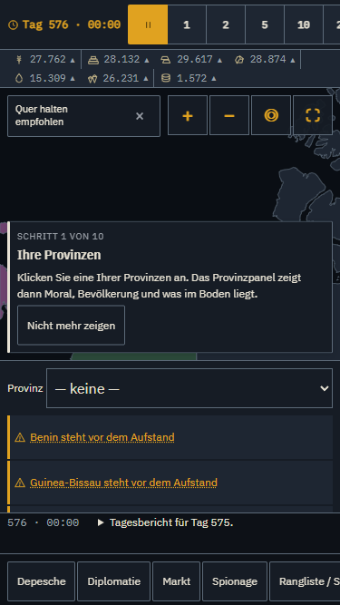
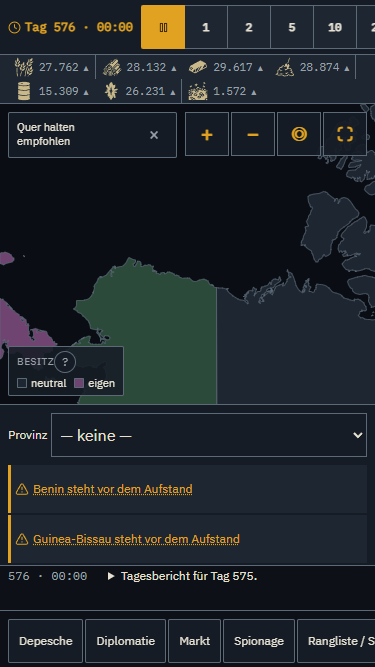
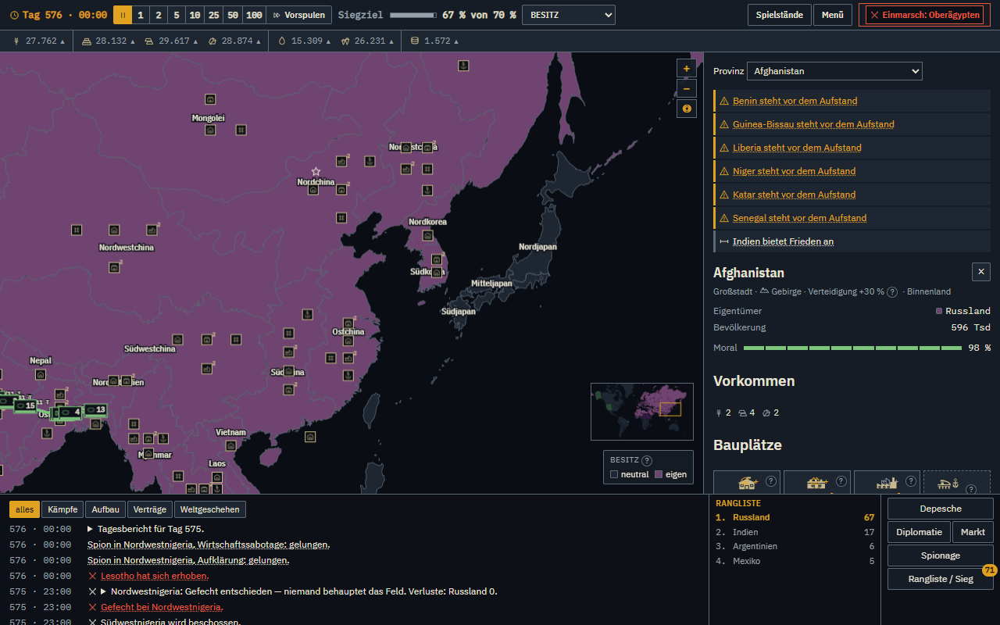
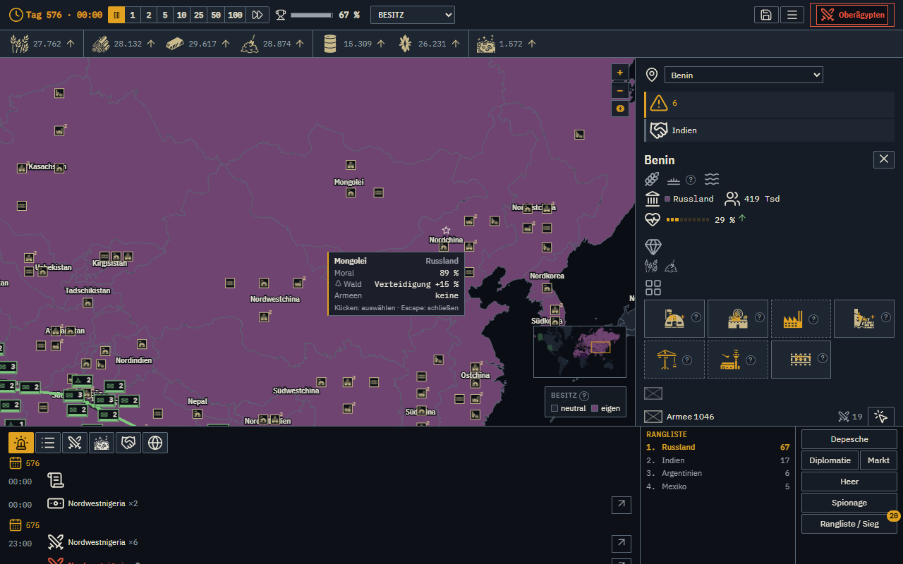

Leistung im Spätspiel (M45) und UX V3 (M46) · 2026-10-04
Zweig claude/v3-leistung-ux: Zahlen vorher und nachher, was Noahs Playtest bewirkt hat und was offen bleibt.
R-PERF-01 — ≥ 98 Ticks/s am Bündel, Langlauf ≤ 10 ms je Tick in jedem 50-Tage-Fenster vor der Entscheidung.| Vermutung | Messung | Folge |
|---|---|---|
| H-P1: Die KI aus Etappe 2 macht das Spätspiel teurer | widerlegt: vor der Entscheidung 9,12 → 9,32 ms (Etappe 1 gegen heute), in der Streuung; der Mittelwert 5,45 → 16,60 ms kam nur aus den Ticks nach dem Sieg (24–32 ms) | Etappe 2 bleibt unangetastet; Hebel: threat.ts, Kern, Hülle |
| Der alte Wert 18,6 ms je Tick | Mischgröße aus Ticks nach Spielende und Parallellast in acceptance | Langlauf wird einzeln gemessen |
| S575: nur 29,9 Ticks/s, zwei Drittel liegen in der Hülle | Messfehler, offen benannt: S575 liegt 14 Tage vor dem Sieg, das 10-s-Fenster maß den Stillstand nach Spielende mit. Richtig: Ticks 70–75 %, Hülle 25–30 % | neuer Stand S500 (G1-8), Grenze unverändert |
Gefunden hat den Fehler die Bahn P-Hülle; die falsche Deutung steht mit Begründung im Bericht, nicht gelöscht.
pnpm acceptance 12 von 12, 3 min 49 sBeweis, dass die Optimierung das Spiel nicht verändert (Regel 3):
| Beleg | Ergebnis |
|---|---|
| Spätspiel-Hash, S100 / S300 / S575, je 720 Ticks mit KI | vorher = nachher |
Golden Master tiny-500 und walkthrough | unverändert (Diff gegen main leer) |
| KI-Turnier | zeilengleich: 84 / 61 / 63 % wie zuvor, nur Datum und Messcommit neu |
| Haltungs-Messlauf | inhaltsgleich, nur Messcommit und Zeit neu |
| Siegtag der ausgelieferten Partie (AK-1) | 589 wie vorher; Langlauf-Entscheidung weiter bei Tick 9456 |
Die UX-Bahnen haben Kern, KI und Regeldaten nicht berührt; die sieben geänderten Quelldateien in core und ai stammen aus den Leistungsbahnen.


| Kennzahl (Spätspiel S575G) | Vorher | Nachher |
|---|---|---|
| Telefon: Kopfelemente im Bild; Kopfbreite | 5 von 17; 1561 px | 13 von 13; 375 px |
| Armee bewegen per Tastatur (S300) | 46 Tasten | 8 Tasten |
| Protokollzeilen im DOM (Ansicht „alles“) | 81 | 22 |
| Vollständig verdeckte Armeemarker (von 237) | 208 | 0 |
| Ereignisarten mit Ort (Puls und Sprung) | 7 von 8 | 8 von 8 |
| Ereignisarten mit eigenem Klang | 3 von 8 | 8 von 8 |
| Bildläufe in der Diplomatie (Krieg / Frieden / Handel) | 2 / 1 / 2 | 0 / 0 / 0 |


| Textanteil (S575G 1280x800) | Vorher | Nachher |
|---|---|---|
| Kopf | 0,835 | 0,454 |
| Provinzpanel | 0,816 | 0,328 |
| Armeepanel | 0,930 | 0,244 |
| Alarmliste | 0,981 | 0,288 |
| Protokoll | 0,992 | 0,435 |
Größter Wert über alle 64 Messungen (auch Telefon und S300): 0,498. Symbolabdeckung: Einheiten 10/10, Gebäude 7/7, Rohstoffe 7/7. Quellen: game-icons.net (CC BY, von Noah freigegeben, Nennung im Menü), milsymbol, Lucide, Kenney (CC0).
Noah spielte bis Tag 444: Spielfluss „sehr gut“, Karte „gut“, wollte weiterspielen.
| Noahs Fund | Stand |
|---|---|
| Einheiten liegen übereinander | umgesetzt: Stapel aufgefächert; 0 verdeckte, 0 teilweise verdeckte Marker, 193 von 193 eigenen Armeen per Klick wählbar. Preis: Marker stehen bis 155 px vom Ort (Maßstab 8) |
| „Ploppen“ nervt | umgesetzt: 8 von 8 Ereignisarten mit eigenem Klang. Ob es noch nervt, kann nur Noah hören |
| Töne ohne Ort | umgesetzt: 2142 von 2142 hörbaren Ereignissen (720 Ticks, S100/S300/S575) mit Puls und Sprung |
| Protokoll überfüllt | teilweise: Sammelzeilen, Wichtigkeit, Filter; bis 7 statt 35 Zeilen je Tag. Siehe Offen |
| UI zu textlastig | umgesetzt im V3-Teil (vorige Folie); der Gesamtumbau aller Dialoge ist V4/V5 |
| Ausheben in eroberter Provinz gesperrt | Anzeige jetzt („Moral 23 von 25 nötig“); die Reparatur kommt nach V3 |
| Verteilung in der Provinz, Waffenradius | vorgemerkt für V4 „Gefecht“ |
Ereignisdichte aus einer Vollpartie (Startzahl 1914, 1 Mensch ohne Befehle + 7 KI, Sieg Tag 589):
claude/v3-leistung-ux nach main; danach WORKFLOW.md §0 richtencommands/recruit.ts:46), verhaltensändernd, also volle Messkette (Turnier, progress.slow, 9 Vollpartien, Haltung) und Noahs Wort. Moral oder Grenze zu senken wurde verworfen